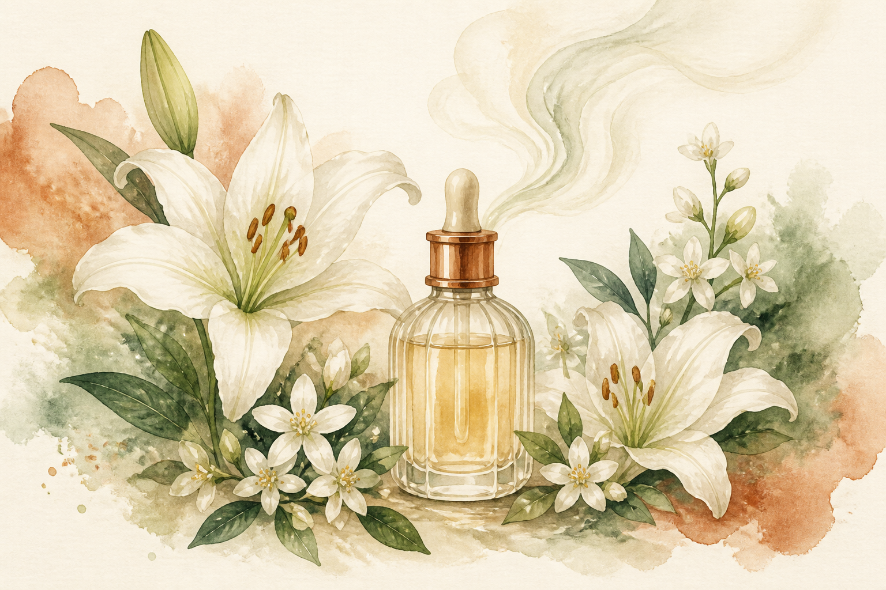
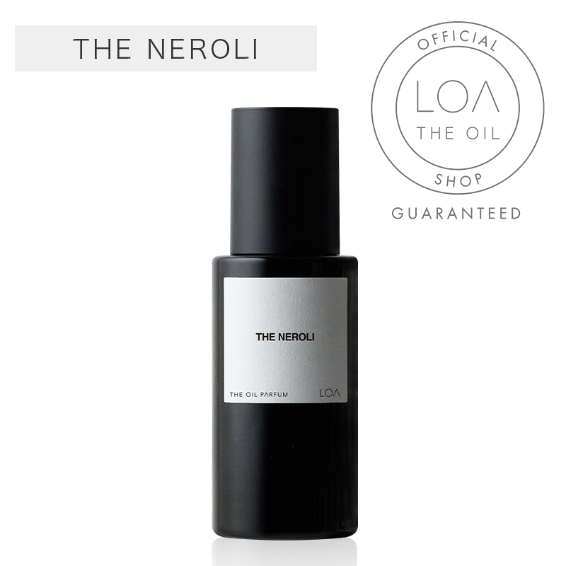

EMPATHY
こんな「整ったのに、満たされない」、心当たりありませんか。
- ケアを一通り見直して髪の調子は安定したのに、鏡を見て「悪くない」で止まってしまう
- 髪をなびかせたときにふわっと香ってほしいのに、実際は何も香っていない気がする
- シャンプーやトリートメントの香りが、乾かした瞬間にほとんど消えていることに気づいてしまった
- 香水はつけたいけれど、朝つけると夕方には飛んでいて、結局つけ直す習慣が続かない
- ケアアイテムを「香りが良さそう」という理由で選んで、補修力のほうで後悔したことがある
- 逆に、補修力で選んだアイテムの香りが好みじゃなくて、毎日ちょっとだけ我慢している
- 「髪をきれいにする」ことは頑張れるのに、「自分の気分を上げる」ためだけの買い物は後回しにしてきた
一つでも頷いたなら、あと3分だけ読み進めてほしいんです。
私自身、このシリーズで4回かけて「髪そのもの」を整えてきました。第2弾で毎日のシャンプーを変え、第1弾で洗い流さないトリートメントを足し、第3弾で仕上げのバームを加え、第4弾で週2〜3回の集中ケアを挟んだ。正直、「髪のコンディション」という意味では、もうやれることはほぼやり切った感覚があります。
でも、ある日ふと気づいたんです。髪は整った。手触りも変わった。それなのに、鏡の前で「よし、いい感じ」と心から思える日が、そんなに増えていない。──足りなかったのは、補修じゃなかった。「他人から見た髪の状態」は整ったのに、「自分が感じる自分」の部分が、まるごと手つかずだったんです。

IF NOTHING CHANGES
正直に言うと、いちばん怖いのは「香りがしないこと」そのものじゃありません。
「ケアさえ整えば、そのうち満足できるはず」と信じたまま、"整えること"だけを永遠に続けてしまうことです。
シャンプーを変える。オイルを足す。バームで仕上げる。マスクで集中ケアする。一つずつ積み上げてきた達成感は、確かにあります。だからこそ、まだ物足りなさが残っているとき、人はこう考えます。「まだケアが足りないんだ」と。
そして、6本目のトリートメントを探し始める。7本目のシャンプーを比較し始める。でも半年後も、1年後も、たぶん同じです。補修の物差しで満たそうとしているかぎり、"補修では埋まらない場所"は、いつまでも埋まりません。
しかもこれ、お金の話でもあります。「この香り好きかも」という理由でシャンプーやトリートメントを選び、使ってみたら補修力がいまひとつで、また別のものに買い替える。逆に補修力で選んだら香りが好みじゃなくて、1本まるごと我慢して使い切る。1本3,000〜4,000円のアイテムでそれを5回繰り返せば、1万5,000円以上。"補修と香りを1本でまかなおうとして、どちらにも振り切れなかったコスト"を、すでに何年も払い続けていた、ということも珍しくありません。
そしてもう一つ。すれ違ったときにふわっといい香りがした人のこと、覚えていませんか。あの数秒で「この人、ちゃんとしてるな」と思った、あの感じ。自分の番になったとき、渡せるものが何もない。これは髪の話であると同時に、「自分で自分の機嫌を取れる手段を、いくつ持っているか」という話でもあります。
いちばんもったいないのは、ここです。第1〜4弾のケアで髪はもう整っているのに、その"整った土台"の上に、何も乗せないまま毎日が過ぎていくこと。土台だけあって、仕上げがない。だから「悪くない」で止まる。
でも──足りなかったのは、ケアの質でも量でも本数でもなかったんです。「補修」と「香り」を、別々の役割として持っていなかっただけ。まだ間に合います。変えられるのは、出かける前の、たった1プッシュからです。
THE TURN
そこでたどり着いたのが、「LOA THE OIL PARFUM ザ ネロリ」でした。
ここで一つ、決定的なことに気づいたんです。これまで紹介してきた第1〜4弾のアイテムは、どれも「補修」や「保護」を主目的に設計された商品でした。香りはあくまで、その過程で感じる副次的な要素。メインの役割ではありません。
これは「ケアアイテムの香りが弱い」という話ではありません。むしろ当然です。補修成分を最優先に設計されている以上、香りは"添えるもの"になる。毎日使うケアアイテムとして、それが正しい設計なんです。
一方で今回のアイテムは、そもそもの設計思想が違います。補修オイルではなく"香水オイル"というジャンル。香りそのものが主役として設計されているから、香りの持続力も、変化の仕方も、質感も、まったく別物になります。
言ってしまえば、第1〜4弾のケアが"土台"。そしてこの1本が"仕上げ"。土台だけでも髪は整います。でも、仕上げを1つ乗せるだけで、「今日の自分、悪くないな」と思える瞬間を、自分で作れるようになります。
私がこのオイルを信頼できると感じた理由は、大きく3つ。
香りが3段階で変化していく"香水"としての設計
トップはシダーウッドのウッディ&スパイシー、ミドルで華やかなネロリ、ラストはムスク・アンバー・ウッドの余韻。「つけたときの香り」だけで終わらない設計が、決定的な違いです。
第1〜4弾と役割がぶつからない
補修目的ではなく香り目的。使うタイミングも"出かける直前"。既存のケアを何ひとつ変えずに、上に1つ乗せるだけで完結します。
ヘアもボディも1本で完結するマルチユース
髪に使って手に残ったぶんを、そのまま手の甲や首筋へ。「髪だけ香る」でも「肌だけ香る」でもない、自分ごと包まれる感覚が作れます。
「髪を整えるケア」から、「自分を満たすケア」へ。4回かけて土台を作ってきたからこそ、いま乗せる意味がある1本です。
THE PRODUCT
LOA THE OIL PARFUM ザ ネロリ とは
LOA(ロア)の「THE OIL」シリーズは、ヘアにもボディにも使えるマルチオイル。その中で「THE OIL PARFUM」は、2026年5月に発売されたばかりのプレミアムラインです。
ベースラインの「LOA THE OIL」(¥5,500 / 100ml)が"香りも楽しめるマルチオイル"なら、この「THE OIL PARFUM」は、香りそのものを主役に置いた"香水オイル"。全3香調(ザ ネロリ / パチュリ グリス / パリジャン フラワー)のうち、今回選んだのは、いちばん清潔感があって男女問わず使いやすい「ザ ネロリ」です。

- タイプ
- マルチオイル(ヘア+ボディ兼用の香水オイル/洗い流さない)
- 価格
- ¥8,800(ALBUM ONLINE STORE・70ml/¥125/ml)
- 使うタイミング
- 乾いた髪に、外出前や人と会う前。毛先中心に1〜2プッシュ
- 使える場所
- 髪、ボディ、ハンド、ネイル
- 香りの流れ
- トップ=シダーウッドのウッディ&スパイシー → ミドル=華やかなネロリ → ラスト=ムスク・アンバー・ウッドが重なる、微かに官能的な余韻
- 香りの方向性
- 清潔感があり甘すぎない。男女問わず使いやすい設計
- 発売
- 2026年5月14日(新商品/直近1ヶ月で200点以上購入)
- 位置づけ
- 「LOA THE OIL」(¥5,500 / 100ml)の上位プレミアムライン
このオイルのいちばんの特徴は、「ケアの工程を、1つも変えない」という点です。お風呂上がりのルーティンは今のまま。第1〜4弾で作った流れに、何も手を加えません。出かける直前に1〜2プッシュ足すだけ。だから「新しいケアを覚える」負担がゼロです。
そして70mlという容量。1回2プッシュ・約0.6mlを目安にすると、およそ116回分。毎日使っても3ヶ月以上もつ計算になります。"1本"として見ると高く感じる価格が、"1回あたり"で見るとまったく違う数字に見えてくる──ここが、このアイテムの面白いところです。
WHY IT WORKS
「で、結局それの何がいいの?」に、飾らず正直に答えます。
髪を整えるだけじゃなく、自分の気分まで仕上げる。これは、補修を4回ぶん積み上げてきたからこそ、「補修では埋まらない場所がある」と分かった、私のいちばん正直な実感です。
WHY TRUST IT
正直に言うと、私は「新商品だから」だけでは商品を信じないタイプです。
それでもこのオイルを紹介したいと思えたのは、こんな背景があるからです。
香りの構成が、香水と同じ言葉で設計・公開されている
トップ=シダーウッド、ミドル=ネロリ、ラスト=ムスク・アンバー・ウッド。"いい香り"という曖昧な表現ではなく、何がどう変化するのかが明示されている。香りを主役に据えた商品として、設計思想がはっきりしています。
既存ラインの"上位版"として設計されている
ベースの「LOA THE OIL」(¥5,500 / 100ml / 9種の香り展開)がすでにある上で、香りに振り切ったプレミアムラインとして新設されたのが THE OIL PARFUM。思いつきの新商品ではなく、既存ラインの延長線上に置かれた上位モデルです。
2026年5月発売、直近1ヶ月で200点以上が購入されている
発売からまだ日が浅い商品にもかかわらず、この動き。「話題になっているけれど、まだ持っている人は多くない」という、香りアイテムとしていちばんおいしいタイミングだと思っています。
全3香調の中で、いちばん万人向けの香調を選んでいる
パチュリ グリス(ローズとレザー)、パリジャン フラワーと並ぶ中で、ザ ネロリは「清潔感があり男女問わず使いやすい」と明記されている香調。初めての1本として、いちばん失敗しにくい選択だと判断しました。
サロン専売品を、公式通販でそのまま買える
今回紹介する ALBUM ONLINE STORE(株式会社オニカム運営)は、美容室専売品を扱う美容通販サイト。第1弾のオラプレックス、第2弾・第4弾のケラスターゼ、第3弾のTHE HAIR BALM 997、そして第5弾のLOA。5回ぜんぶ、ずっと同じお店です。
「補修」と「香り」を、はじめから別軸として扱っている
補修性能を謳って香りも兼ねようとする商品ではなく、香りの体験に振り切った設計。だからこそ、これまで紹介した4本の上に、役割をぶつけずに重ねられます。
※香りの感じ方には個人差があり、体温・肌質・使用量・その日の環境によって変わります。効果効能を保証するものではありません。
WHAT PEOPLE NOTICE
こんな使用感(声の傾向)
香りアイテムなので、感じ方の個人差はどうしても大きくなります。そのうえで、レビューでよく見かける傾向と、私自身が使って感じたことを、盛らずに、そのまま整理してみます。
香りの立ち方について
つけた瞬間はウッディでスパイシー、少し置くとネロリの華やかさが前に出てくる。「最初の印象と、30分後の印象が違う」というのが、いちばん分かりやすい特徴でした。ケアアイテムの香りに慣れていると、この"変化する"感覚がまず新鮮です。
強さについて
「香水ほど主張しないけれど、ちゃんと香る」という距離感。すれ違いざまに気づかれるくらいで、部屋に入った瞬間に充満するタイプではないと感じています。オフィスや人と会う場面でも使いどころを選びにくいのは、この設計のおかげだと思います。
テクスチャについて
オイルなので当然しっとりしますが、「重くてベタつく」というより"薄くのびて肌になじむ"感触。手に残ったぶんを首筋や手の甲に伸ばしても、テカリが残りにくいのは正直ありがたいポイントでした。
使い方の自由度について
「髪に使ったあと、そのまま手や首に使えるのが便利」という声が印象的です。ヘアオイルとボディオイルとフレグランス、と3つ持つ必要がなくなる。持ち物が減ることが、そのまま続けやすさになります。
使う量について
つけすぎると香りが強く出やすいので、まずは1プッシュから試すのがおすすめです。私は毛先中心に1〜2プッシュで落ち着きました。「足りなければ足す」の順番で試すほうが、失敗しにくいと感じています。
もちろん、香りの好みも肌質も人それぞれ。だからこそ、「自分の体温で、この香りがどう立つか」を一度確かめてみる価値があるアイテムだと思っています。
※上記は一般的な使用感の傾向および個人の感想であり、効果を保証するものではありません。
FAQ
よくある質問
普通のヘアオイルと、何が違うんですか?
第1弾のオラプレックスNo.6や、第3弾のTHE HAIR BALM 997と併用できますか?
使う順番とタイミングを教えてください。
香水とはどう使い分けるんですか?
香りはどのくらい続きますか?
男性が使っても大丈夫ですか?
¥8,800は、正直高くないですか?
どのくらいの期間もちますか?
髪がベタつきませんか?
肌に使っても大丈夫ですか?
効果には個人差がありますか?
まず1つだけ試したいのですが、それでも大丈夫?
どこで買えますか?
ABOUT THE PRICE
価格の考え方
LOA THE OIL PARFUM ザ ネロリは ¥8,800。このシリーズで紹介してきた4本(¥3,740 / ¥4,180 / ¥4,290 / ¥7,260)より、はっきり高い。これは正直に認めます。数字だけ見れば、5本の中でいちばん高いアイテムです。
でも、比べる相手が違うんです。過去4本は、すべて「髪を補修するためのケア用品」でした。ケア用品は、ケア用品の相場で考える。だから3,000〜7,000円台という基準になる。一方このアイテムは、香りを主役にした"フレグランス"です。一般的な香水(オードパルファム)なら、1万円を超えるものも珍しくありません。ケア用品の物差しで測ると、話が合わなくなります。
70mlで、1回2プッシュ・約0.6ml目安なら約116回分。1回あたり、約76円。毎日使っても3ヶ月以上もつ計算になります。
ここで一度だけ、正直に振り返ってみてほしいんです。「この香り好きかも」でシャンプーやトリートメントを選んで、補修力で後悔した回数。逆に補修力で選んで、香りを1本ぶん我慢しながら使い切った回数。1本3,000〜4,000円で5回繰り返せば、1万5,000円以上。私はこの計算をして、正直ちょっと笑ってしまいました。"補修と香りを1本でまかなおうとして、どちらにも振り切れなかったコスト"のほうが、よっぽど高くついていたからです。
そしてもう一つ。これはヘアオイルであり、ボディオイルであり、フレグランスでもあります。別々に3つ買っていたものが、1本にまとまる。高いか安いかは、値札だけでは決まりません。"髪の状態を整える"だけでなく、"今日の自分の気分まで仕上げられるか"。そこで考えたとき、¥8,800は、一度試してみる価値のある金額だと、私は思っています。
BEFORE YOU GO
安心して試すために
「8,000円超の香りオイルって、香りを試さずに通販で買って大丈夫なの?」その気持ち、よく分かります。私も最初はまったく同じでした。
だからこそ、この商品の香りの構成が細かく公開されているのは大きいと思っています。トップ=シダーウッドのウッディ&スパイシー、ミドル=華やかなネロリ、ラスト=ムスク・アンバー・ウッドの余韻。「なんとなくいい香り」ではなく、何がどう変化するかが分かったうえで選べます。そして全3香調の中でも、ザ ネロリは「清潔感があり男女問わず使いやすい」と明記されている、いちばん冒険しにくい香調です。
今回紹介している ALBUM ONLINE STORE は、株式会社オニカムが運営する、美容室専売品を扱う美容通販サイトです。第1弾のオラプレックス、第2弾・第4弾のケラスターゼ、第3弾のTHE HAIR BALM 997、そして今回のLOA。5回ぜんぶ、ずっと同じお店です。
そして何より、いきなり5本すべてを揃える必要はありません。第1〜4弾で紹介した補修のケアを、まず一巡させる。そのうえで「髪の調子は悪くないのに、なんとなく物足りない」と感じたタイミングで、この1本を足す。その順番でまったく問題ありません。
というより、この5本の中でいちばん最後に足すべきなのが、たぶんこのオイルです。補修という土台が整っていない状態で香りだけ足しても、順番が逆になってしまう。逆に、髪のコンディションがすでに整っている人にとっては、これがいちばん分かりやすい"次の一手"になります。
補修は土台、香りは仕上げ。大きく生活を変える買い物ではなく、「出かける前に1プッシュ足す」だけの、小さな一歩。ケアの工程が1つも増えないという気軽さこそが、続けられる理由になります。
※価格・在庫・配送などの詳細は、リンク先の販売ページの情報をご確認ください。
※香りの感じ方には個人差があります。心配な場合は少量から試してください。
LAST WORD
「洗う」「足す」「整える」「週2〜3回の集中ケア」。4回かけて紹介してきた補修のケアは、これで完成しています。
でも、補修は"土台"です。
髪のコンディションを整える仕組みであって、「今日の自分、悪くないな」と思える瞬間を作る仕組みではありません。
このまま6本目のトリートメントを探し続けて、「まだケアが足りないのかも」と思いながらまた半年過ごすのか。それとも、整った土台の上に"香り"という仕上げを1つ乗せて、自分の機嫌を自分で取れるようにするのか。
小さな選択に見えて、玄関を出る瞬間の気分は、案外ここで変わります。そして、変えられるのは、いつだって"出かける前の1プッシュ"からです。
追伸
正直に言うと、このオイルも「魔法の1本」ではありません。どんなアイテムも、髪質や体温、使用量によって感じ方は変わります。香りに至っては、好みそのものが人それぞれです。
それでも私がこの1つを紹介したいのは、「満たされないのは、まだケアが足りないからだ」と思い込むのをやめられたからです。足りなかったのは、ケアの質でも量でも本数でもなく、"補修"と"香り"を、別々の役割として持つという考え方でした。
5回に分けて紹介してきましたが、この5つを全部揃える必要はまったくありません。市販品ジプシーだった頃の私は、この2つをずっと同じもの(シャンプーやトリートメントの香り)でまかなおうとしていました。分けて考えるようになってから、鏡を見たときの満足度が一段階変わった気がしています。
もし、髪の調子はもう悪くないのに、「なんとなく物足りない」がずっと消えていないなら。足りない最後の1つは、たぶん補修ではなく香りです。明日の朝、出かける前の1プッシュから、確かめてみてください。